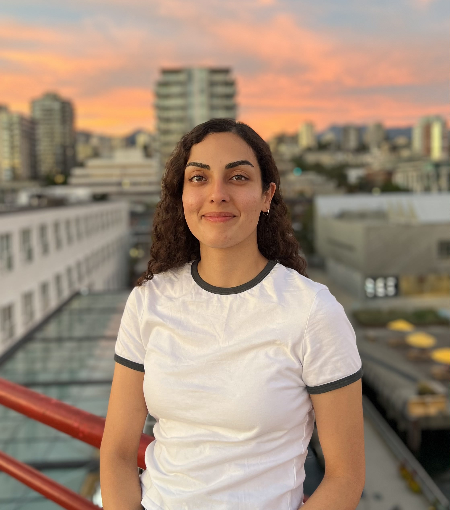

I am a third-year PhD candidate at the University of Alberta under the supervision of
Dr. Thomas Hillen.
Email: negar3 [at] ualberta [dot] ca
Negar Mohammadnejad
PhD Student · Mathematical Biology

Research Interests
Mathematical biology, cancer cell modeling, partial differential equations.Education
MSc in Mathematics, University of Manitoba (2021–2023)
BSc in Mathematics, Shahid Beheshti University (2016–2020)
Papers
-
Travelling Wave Solutions in a Mathematical Model for Oncolytic Virotherapy
Negar Mohammadnejad, Thomas Hillen. To appear in Journal of Differential Biology Volume 479, 2026. -
Stacked Waves and Qualitative Analysis of an Oncolytic Virus–Immune Model
Negar Mohammadnejad, Thomas Hillen. To appear in Bulletin of Mathematical Biology. -
Qualitative Optimization of Oncolytic Virotherapy and Immune Therapy Combination Treatments
Negar Mohammadnejad, Thomas Hillen. Mathematical Biosciences and Engineering, 2026, 23(2): 388–420. -
Positive Singular Solutions of a Certain Elliptic PDE
Journal of Mathematical Analysis and Applications, 2026, 555(1), Article 130033.
Research Visits
-
Summer 2026 (University of Oxford):
Research Visitor — hosted by Dr. Giulia Celora
Blog Posts
-
2026 (SIAM News):
Can a Virus Treat Cancer?
A short feature inspired by recent advances in mathematical oncology and oncolytic virotherapy. The article discusses how viruses can be engineered to selectively target and destroy cancer cells.
Read the article
Teaching
-
Fall 2025–Winter 2026 (University of Alberta):
Math 300 — Advanced Boundary Value Problems